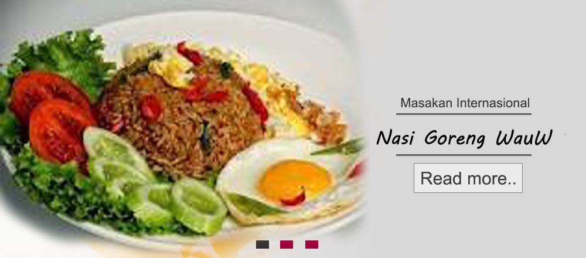
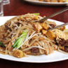
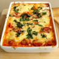

Home Masakan Minuman Kue Roti Dessert

Resep Terbaru
Menu Populer
 Salmon soedod mustard cocok sekali untuk
diner.
Rasanya nikmat dan lezat.
Salmon soedod mustard cocok sekali untuk
diner.
Rasanya nikmat dan lezat.Thai food
noodle fried
noodles mea
bercampur dengan toge, tahu dan daging sapi.
 Kue terbuat
dari campuran
strawberry
cocok untuk
dessert.
Kue terbuat
dari campuran
strawberry
cocok untuk
dessert.Food spanish
baked eggs
bercampur
dengan irisan
sosis goreng yang nikmat.
Menu Hari Ini
Highlights
 Pizza roll baked mini dibuat dengan
bumbu-bumbu
pizza yang sering dibuat di restoran.
Pizza roll baked mini dibuat dengan
bumbu-bumbu
pizza yang sering dibuat di restoran. Mie Japanese dengan rasa gurih berpadu dengan
daun bawang yang nikmat.
Mie Japanese dengan rasa gurih berpadu dengan
daun bawang yang nikmat.20
Jan
Sup daging bebek.
Santap siang atau malam terasa kurang
lengkap bila tidak ada sup.
12
Feb
Bandeng presto bumbu cabai.
Hidangan yang satu ini tak bisa diragukan lagi kelezatan
dan
kenikmatannya.
04
Ags
Udang masak kolio.
Mari kita buat udang masak kolio yang cocok disantap pada siang
hari
dan malam hari.